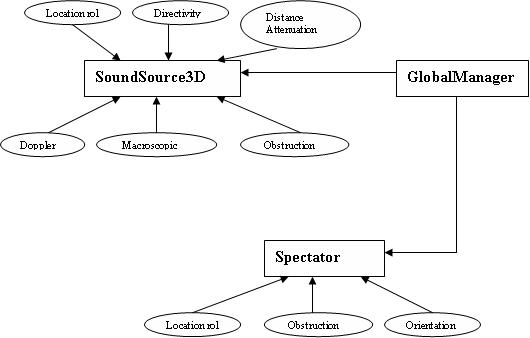
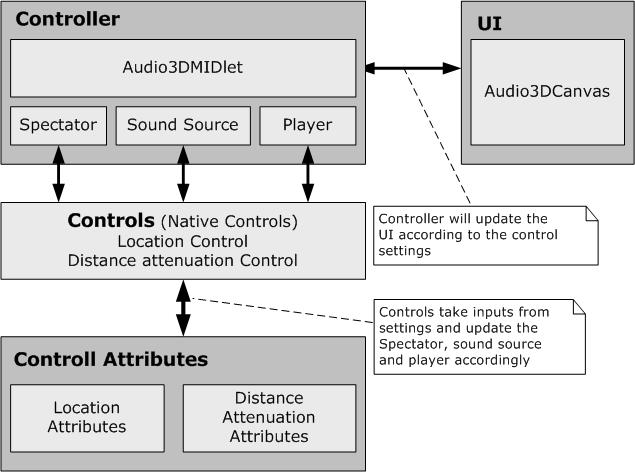
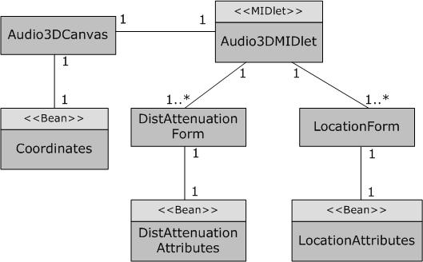
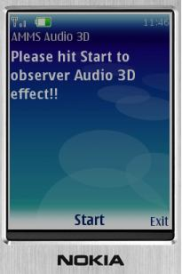
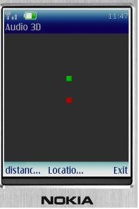
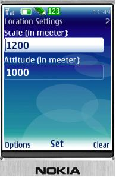
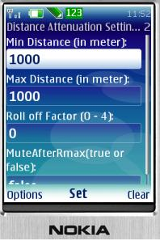

JSR 234 Example MIDlet Application Documentation
Package com.nokia.midp.example.jsr234.audio3d Description
This example demonstrates Advance Multimedia Suppliments Audio 3D.
Section Contents
1. Introduction
2. Use cases
3. Design Diagrams
4. User Interface
Introduction
Example MIDlet applications are generic applications which gives basic example of usablility of particular JSRs. Developers can use it for reference and testers can use it to test relevant JSR. MIDlet is intended for Series 40 and Series 60 SDKs.
MIDlet applications contain basic reference implementation of JSR APIs, which explains JSR usability to developers and testers. Developers should be able to develop professional applications.
AMMS contains various packages for Audio3D, Image effects, Camera and Tuner settings. As the EMA will implement the audio3D package, an introduction to the same is given.
The audio3D package contains controls for various 3D audio settings. The controls are typically fetched from Soundsource3Ds and Spectator. The schematic diagram bellow shows the soundsource3d and spectator and controls applied on them.

Diagram 1: JSR 234 Audio 3D Architecture Diagram
Use cases
Main use cases of the application are:
1. Sound source or spectator movement
2. Sound attenuation (as the sound source is moved away from the spectator)
Main functionality of the usecase are:
1. LocationControl extends javax.microedition.media.Control
- Moving the sound source away from the spectator – sound becomes less audible
- Moving the soundsource to the left or right of the spectator – sound is heard only from left or only from the right speaker.
2. DistanceAttenuationControl extends javax.microedition.media.Control
- Setting the minimum distance attenuation as 10 m – sound is loudest(distance gain =1) till 10m and after that the sound attenuates with distance
- Setting the Maximum distance as 500m – sound attenuates till this distance according to the rolloff factor.
- Setting the rolloff factor – higher the rolloff factor greater is the attenuation.
- MuteAfter Maximum distance – When this is set to true, sound is muted after maximum attenuation distance.
Design Diagrams
Example Application Architecture is given in the bellow diagram.

Diagram 2: JSR 234 Example Application Architecture Diagram
Class diagram of the example application is given bellow

Diagram 3: JSR 234 Example Application Class Diagram
User Interface
On launching the midlet, the following screen appears on the emulator with “exit” and “start” soft keys.

Press the “start” softkey. The next screen shows the spectator(red block) and the sound source(green block). Use the arrow keys to move the sound source.

Press the “Menu” key. The menu items “Location settings” and “Distance Attenuation settings” can be seen.
Select the “Location settings” option. The UI shows textfield where the user can enter the new position settings. Soft key “set” is used to commit the new settings. “cancel” soft key is used if the user wants to retain the previous settings.

Select the “Distance Attenuation Settings” option. The UI shows textfield where the user can enter the new distance attenuation settings with the values being in the range specified. Soft key “set” is used to commit the new settings. “cancel” soft key is used if the user wants to retain the previous settings.
